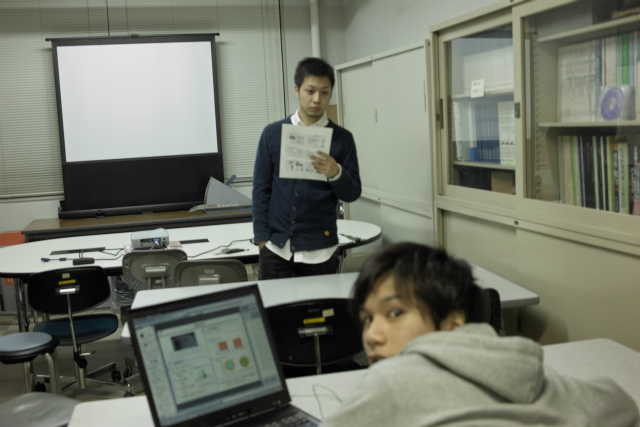
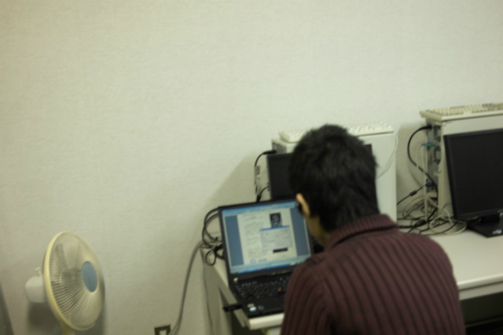
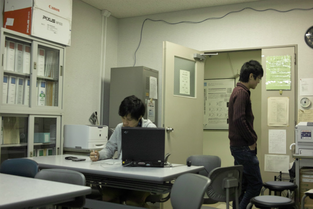
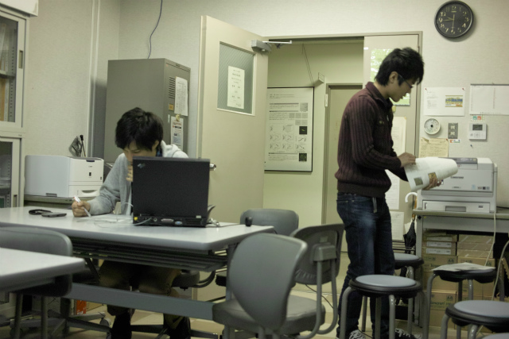
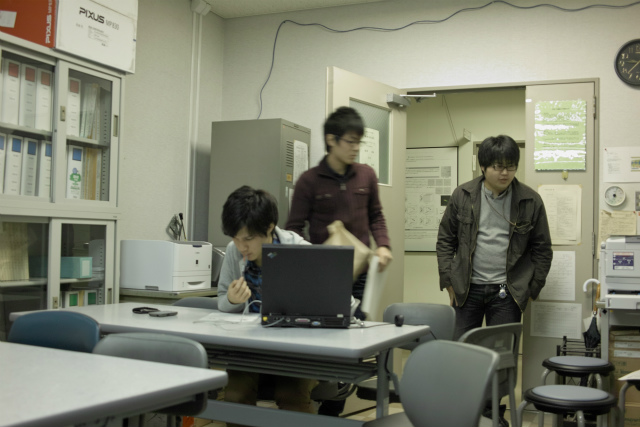
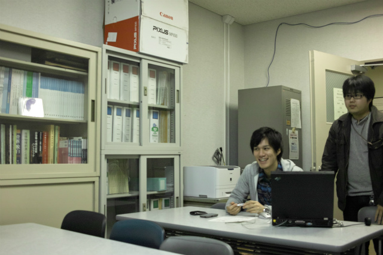
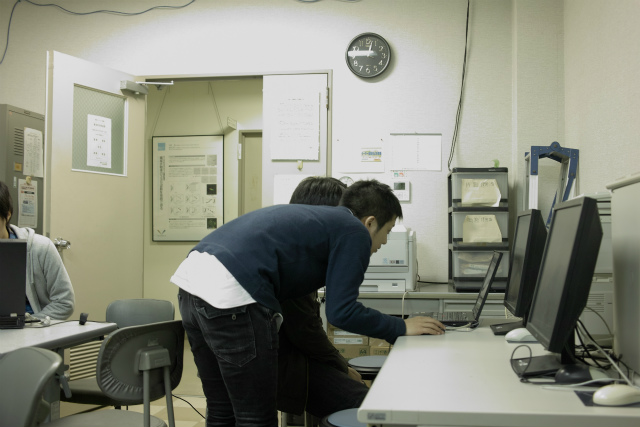

| ・ 中間発表前夜 (H24.11.29) | |||
去年より余裕？があるのか無いのかわかりませんが、プレゼン作成は一区切りついているようです。今年はいろいろ早いです。明日に備えてレジュメを印刷したり準備万端のようです。 |
|||
|

H井くん、びっくりしすぎ |

レジュメ印刷中のK林くん | ||
|

あれ？出ない |
プレゼン練習中 | ||
|

誰の？違うのが出た |

N村くん「オレも印刷するわ」 | ||
|

助教に邪魔されるF木くんを見るふたり |

なんか出力できない | ||